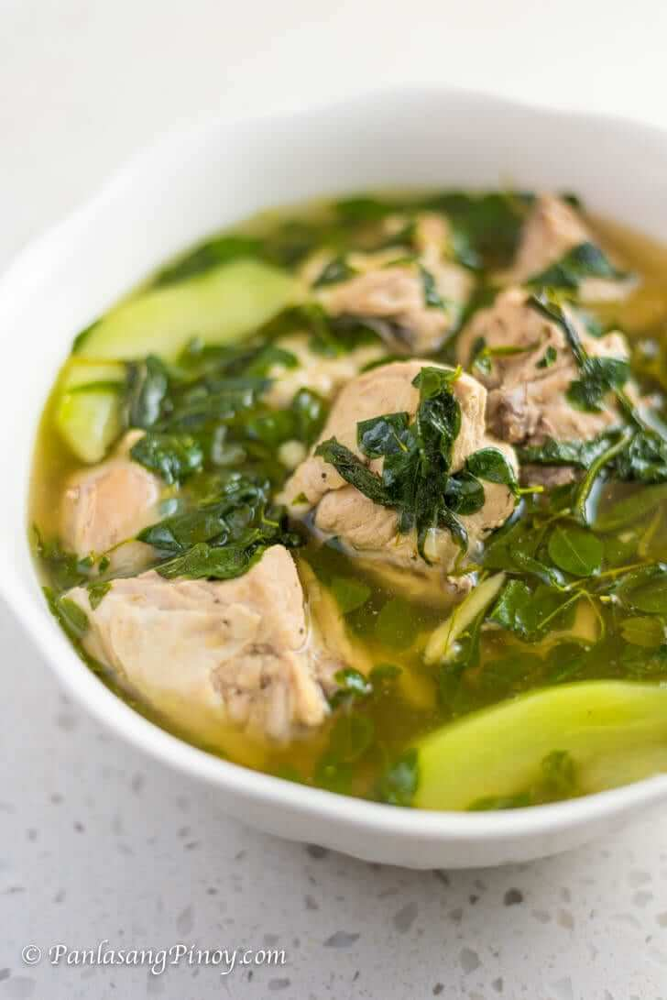

Tinolang Manok

Why dont you try this dish from PH?
This is very delicious
This are the List of ingredients
- 2 lbs. chicken cut into serving pieces
- 1 cup malunggay leaves
- 1 cup hot pepper leaves
- 1/8 teaspoon ground black pepper
- 1 piece unripe papaya wedged
- 6 cups water
- 1 piece Knorr chicken cube
- 1 piece onion sliced
- 4 cloves garlic crushed and chopped
- 3 thumbs ginger julienne
- 2 tablespoons fish sauce patis
- 3 tablespoons vegetable oil
Steps on how to Cook
- Heat oil in a pot.
- Sauté garlic, onion, and ginger. Add the ground black pepper.
- When the onion starts to get soft, add the chicken. Cook for 5 minutes or until it turns light brown.
- Pour the water. Let boil. Cover and then set the heat to low. Boil for 40 minutes.
- Scoop and discard the scums and oil on the soup.
- Add the Knorr chicken cube and chayote or papaya. Stir. Cover and cook for 5 minutes.
- Put the malunggay and hot pepper leaves in the pot and pour the fish sauce in. Continue to cook for 2 minutes.
- Transfer to a serving bowl. Serve.
- Share and enjoy!